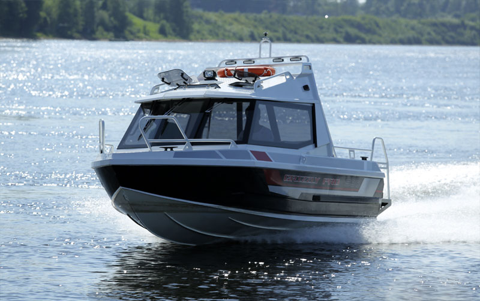

Катер Grizzly PRO 580 CAB (Гризли Про 580 Каб)
 Прайс-лист (цены) на катер и доп. оборудование
Прайс-лист (цены) на катер и доп. оборудование
Многофункциональный катер GRIZZLY PRO 580 CAB (Гризли Про 580 Каб) – один из лучших представителей популярного класса катеров до 6 метров.
Главная особенность модели – наличие удобной каюты на 8 мест, которая делает GRIZZLY PRO 580 CAB (Гризли Про 580 Каб) катером для туризма охоты и рыбалки. По площади внутреннего пространства катер является бесспорным лидером своего класса. Огромный кокпит – самый большой среди лодок данного размера. Оснащённый современными обводами корпус позволяет GRIZZLY PRO 580 CAB (Гризли Про 580 Каб) развивать высокую скорость и демонстрировать прекрасные мореходные качества. Рекомендуемая мощность двигателя 150 л.с. Встроенный бак объёмом 200 литров даёт возможность использовать судно для длительных водных путешествий. На катере с комфортом может расположиться компания из 8 человек. Главным плюсом модели можно назвать материал, использованный для изготовления корпуса катера. Корпус катера полностью выполнен из морского алюминиевого сплава АМГ-5М толщиной 5мм,4мм,3мм.
Технические характеристики катера:
| Параметр | Grizzly PRO 580 CAB |
|
Длина |
5.80 м |
|
Максимальная ширина |
2.15 м |
|
Высота надводного борта |
0.90 м |
|
Килеватость |
19º |
|
Высота транца |
510 мм |
|
Масса |
950 кг |
|
Корпус |
сварной |
|
Толщина днища |
5 мм |
|
Толщина борта (зигованный) |
4 мм |
|
Рекоменд. мощность двигателя |
150 л/с |
|
Материал корпуса |
Алюминиево-магниевый сплав АМГ-5М |
|
Кол-во пассажиров |
8 человек |
Стандартная комплектация:
- Цвет корпуса: белый
- Рулевое управление со штурвальным тросом под мотор до 200 л/с. Стационарный топливный бак 200 л.
- Боковые рейлинги.
- Ветровые стекла и стёкла рубки (калёное) 4 мм.
- Самоотливной кокпит (палуба)и носовой ящик под якорь.
- Носовой и кормовой рундуки.
- Швартовые утки (6 шт.).
- Антискользящее покрытие на носу и корме.
- Мягкие подушки на сиденья.
- Панель управления.
- Ходовые огни.
- Электропомпа.
- Выключатель массы с ключом.
- Ящик под аккумулятор.
Отличительные свойства катера
Дизайн катера заслуживает отдельного внимания. Модель выполнена в элегантном стиле, со свежими элементами веяния морской моды. Для внутренней отделки использованы высококачественные материалы ведущих мировых производителей из Америки, Испании и Италии. Тиковые покрытия, ценные породы дерева, кресла из морской винил кожи – не оставят равнодушным даже самого требовательного эстета. Комфортный кормовой диван, большие удобные консоли, стилизованное лобовое стекло импортного производства – дополняют мастерски созданную композицию. Катер GRIZZLY PRO 580 CAB (Гризли Про 580 Каб) является идеальным судном для открытой воды. Прочный и надёжный корпус катера выполнен из высококачественного алюминия и пластика. Использование данных материалов делает модель долговечной и неприхотливой в обслуживании. Набор катера сделан из продольного и поперечных реданов с большим запасом прочности.
Технология - гарантия качества
Завод, на котором родился катер GRIZZLY PRO 580 CAB (Гризли Про 580 Каб) , был создан специально для производства катеров. Весь процесс создания отслеживается компанией с самого первого этапа до выхода модели на рынок. На заводе установлено инновационное оборудование и используются только высококачественные материалы. Технология производства корпуса выполняется на оборудовании немецкой фирмы EWM путём двусторонней сварки. Внутреннее заполнение бортов и под палубное пространство пенополиуританом под высоким давлением 5,5 кубических метров обеспечивает катеру положительную плавучесть даже при максимальной нагрузке. Раскрой металла выполняется на высокочастотном станке чпу плазменной резки французской фирмы Vulkan, лидера данной области станкостроения. GRIZZLY PRO 580 CAB (Гризли Про 580 Каб) – катер выходного дня, на котором Вы можете весело провести уикенд с семьей или выйти в открытую воду для удачной рыбалки охоты или путешествий с друзьями. . Элегантный и стильный катер будет радовать вас многие годы, не требуя к себе дорогостоящего обслуживания и сложного ухода Для дополнительного удобства можно заказать кормовой тент , отопитель салона, камбуз состоящий из газовой плиты, мойки, балон на 5кг газ- пропан, столик для разделки продуктов и обеденный стол , крепления для катания на водных лыжах и сидения на рессорах и т.д.
{kind=link}
{kind=link}
{kind=link}
{kind=link}
{kind=link}
{kind=link}
{kind=link}
{kind=link}
{kind=link}
{kind=link}
{kind=link}
{kind=link}
{kind=link}
{kind=link}
{kind=link}
{kind=link}
{kind=link}
{kind=link}
{kind=link}
{kind=link}